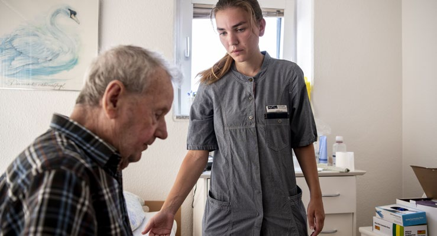
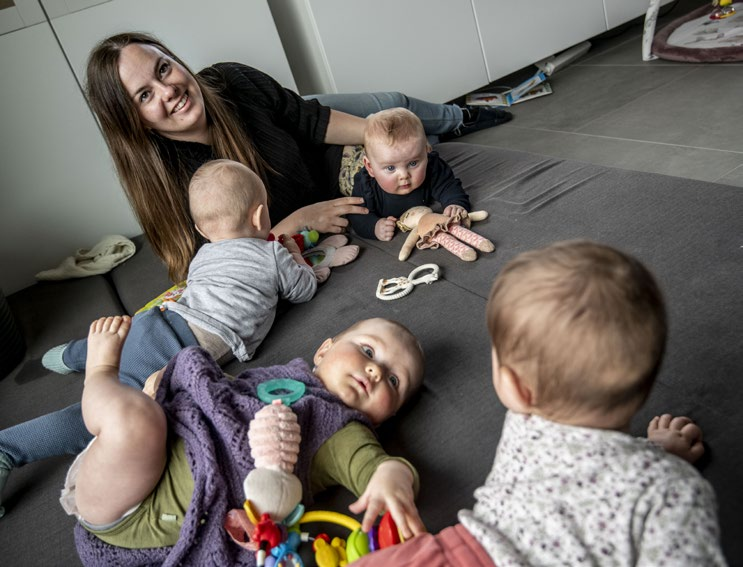
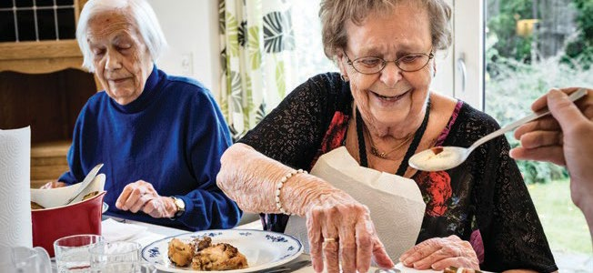
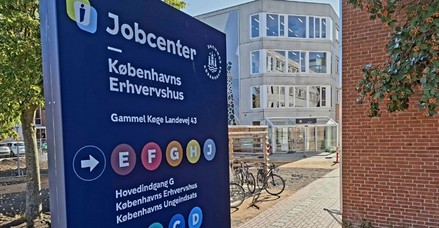
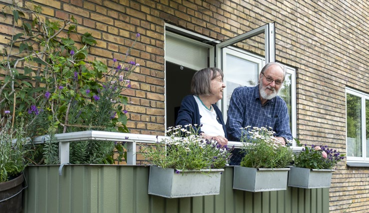

3.2 – VELFÆRDSSAMFUNDET
sidde 105
Det danske velfærdssamfund bygger på et princip om, at den enkelte borger har både rettigheder og pligter. Borgere, der opfylder visse betingelser, har ret til velfærdssamfundets ydelser. Men den enkelte borger har også pligt til at bidrage til fællesskabet. Dels ved at betale skat, dels ved at arbejde, hvis man kan. Står man uden for arbejdsmarkedet og modtager hjælp, har man også pligt til selv at gøre en aktiv indsats for at komme tilbage på arbejdsmarkedet. Alt i alt er denne tankegang udtryk for en slags uformel kontrakt mellem staten og borgerne med både pligter og rettigheder.
Den danske model for velfærdssamfundet har mange træk til fælles med de andre nordiske landes. Ofte taler man om den nordiske model. Der er også mange lighedspunkter med andre rige lande, men der er dog nogle forhold, hvor den danske – og nordiske – velfærdsmodel skiller sig ud:
• Staten har et stort ansvar for borgernes velfærd fra vugge til grav. Der er børnepasning for alle børn. Børn og unge har adgang til gratis uddannelse. Alle er sikret behandling ved sygdom. Der er hjælp eller pasning til ældre og andre, der ikke kan klare sig selv. Og der er økonomisk støtte til dem, der ikke kan arbejde og forsørge sig selv. • De fleste velfærdsydelser finansieres af hele befolkningen i fællesskab via skatter og afgifter. I mange andre lande finansieres velfærdsydelserne mest ved sociale bidrag, der betales af lønmodtagere og arbejdsgivere. I Danmark er retten til ydelser normalt ikke afhængig af, at man har været i arbejde og har betalt sociale bidrag, som det er tilfældet i flere lande syd for Danmark i Europa. • Velfærden stilles til rådighed for alle borgere, når de opfylder betingelserne for at modtage den.Social- og sundhedsassistent på arbejde i hjemmeplejen. Foto: Johan Gadegaard/Ritzau Sc
Social- og sundhedsassistent på arbejde i hjemmeplejen. Foto: Johan Gadegaard/Ritzau Scanpix.
Læremateriale Til Indfødsretsprøven

sidde 106
Der er lagt stor vægt på serviceopgaver, der aflaster familien. Det gælder specielt børnepasning (vuggestuer, børnehaver, skolefritidsordninger) og ældre pleje (hjemmehjælp, plejehjem med videre). Flere europæiske lande har på visse områder ladet sig inspirere af den nordiske velfærdsmodel.
Den danske måde at indrette velfærdssamfundet på gør det muligt for både mænd og kvinder at deltage aktivt på arbejdsmarkedet, også selv om de har børn. I danske børnefamilier arbejder både faderen og moderen typisk på fuld tid eller næsten fuld tid. Også her er de europæiske lande gået i samme retning som de nordiske.
DEN DANSKE VELFÆRDSMODELS UDVIKLING
I alle samfund er det de voksne, der kan arbejde, som tager sig af de ældre, af børnene og af dem, der af den ene eller anden grund ikke kan klare sig selv. Historisk har dette ofte været organiseret inden for den enkelte familie eller i lokale fællesskaber.
I Danmark er en stadig større del af disse opgaver gradvist blevet overtaget af velfærdsstaten. Det er sket ved, at der efterhånden er blevet skabt et system, hvor alle samfundets borgere har ret til at få økonomisk og praktisk hjælp ud fra ensartede kriterier.
De første skridt til det velfærdssamfund, man kender i dag, blev taget i 1890’erne. Det skete i en tid med store økonomiske og sociale forandringer. Landbruget blev lagt om, industrien voksede frem, og byerne voksede. Med ændringerne af det gamle landbrugs- og håndværkersamfund forsvandt en række private, sociale ordninger. I stedet begyndte staten i stigende omfang at tage sig af de borgere, der havde behov for hjælp. Der kom flere og efterhånden mere faste regler for, hvem der kunne tildeles sociale ydelser ved sygdom, ulykke, arbejdsløshed og alderdom. Der var også flere og flere, som fik adgang til ydelserne.
I 1933 blev der som led i det såkaldte Kanslergadeforlig gennemført en større socialreform. Med reformen blev 55 socialpolitiske love samlet i fire ”folkefor sikringslove”. Der blev også gennemført en højere grad af rettighedsprincip, det vil sige klarere regler for, hvornår og hvor meget den enkelte borger kunne få i hjælp. Indtil da var det i høj grad op til den enkelte kommune at vurdere, om en borger havde ret til hjælp, og hvor meget der kunne gives. Endvidere afskaffede reformen også de fleste såkaldte deklasseringsbestemmelser i sociallovgiv ningen. Det vil sige, at den gjorde til hovedprincip, at man ikke kunne tabe sin valgret eller andre af sine borgerrettigheder, fordi man modtog hjælp fra det offentlige.
De vigtigste spor frem mod det nuværende velfærdssamfund blev lagt i 1950’erne og 1960’erne. Her blev flere af de grundlæggende principper for velfærdssam fundet etableret. Det sociale sikkerhedsnet blev udbygget, blandt andet med
Læremateriale Til Indfødsretsprøven
sidde 107
folkepensionslovene i 1956 og i 1964, der indførte folkepension til alle ældre og ikke kun de svageste ældre. Og serviceydelserne voksede frem. Tidligere havde staten især givet kontante ydelser, det vil sige økonomisk hjælp til de borgere, der havde mistet deres indkomst på grund af arbejdsløshed, sygdom og ulykke eller alderdom.
Men i denne periode begyndte velfærdssamfundet også at omfatte en række serviceydelser, som varetog opgaver, som familien tidligere havde været alene om at tage sig af. Det gjaldt ikke mindst børnepasning og hjemmehjælp til ældre. Princippet om hjælp til den nødstedte borger blev i højere og højere grad suppleret af et princip om, at hele befolkningen – rig såvel som fattig – kan nyde godt af de forskellige ydelser.
Det var især fra midten af 1960’erne til slutningen af 1970’erne, at den store udbygning af serviceydelserne fandt sted. Det skete samtidig med, at næsten alle kvinder – også dem som var gift – kom ud på arbejdsmarkedet, så den hjemmegående husmor næsten forsvandt. Fra 1980 til omkring år 2000 fort satte denne udvikling med, at flertallet af de gifte kvinder gik fra deltid til fuld tid eller næsten fuld tid. Det var navnlig det offentliges overtagelse af børnepasning og ældrepleje med videre, der gjorde dette muligt. Dansk vuggestue. Foto: Morten S
Dansk vuggestue. Foto: Morten Stricker/Ritzau Scanpix.
Så godt som alle børn mellem 1 og 6 år får børnepasning, mens de fleste 7 til 10-årige bliver passet i en fritidsordning efter skole. Barsels- og forældre orloven er også forlænget i flere omgange fra ganske få uger i 1970’erne til de 52 uger med fulde dagpenge, der har været gældende siden 2002.
Læremateriale Til Indfødsretsprøven

sidde 108
Velfærdsstaten afhænger af den økonomiske udvikling i samfundet. I perioden 1957-73 var der kraftig økonomisk vækst. Væksten i den offentlige sektor fort satte også i højt tempo op gennem 1970’erne trods langvarig økonomisk krise.
Det stod imidlertid mere og mere klart, at økonomien havde svært ved at bære udviklingen i de offentlige udgifter. Derfor blev der bremset op i 1980’erne, og siden da er væksten i de offentlige udgifter fortsat i et mere begrænset tempo, så den omtrent har fulgt den generelle vækst i økonomien. En af de største lang sigtede udfordringer for velfærdsstaten i Danmark og andre europæiske lande er, at der bliver færre til at betale for den velfærd, som flere skal nyde godt af. Det skyldes primært, at middellevetiden stiger, men også at fødselstallet har været lavt i mange årtier. Man taler derfor om, at den såkaldte ’forsørgerbyrde’ – eller det ’demografiske pres’ – er steget. Fra 1980 til 2026 er andelen af borgere i Danmark på over 64 år vokset fra at udgøre 14 procent til 21 procent af den samlede befolkning.
En væsentlig del af løsningen har derfor været at udvide den erhvervsaktive alder. Det vil sige den alder, hvor man som hovedregel er på arbejdsmarkedet.
Således besluttede Folketinget i 2006, at folkepensionsalderen skulle hæves i takt med, at danskerne lever længere. Folkepensionsalderen var 65 år til og med 2018, men hæves gradvist, først til 67 år i 2022, derefter til 68 år fra 2030 og 69 år fra 2035. Desuden blev det i 2011 vedtaget at afkorte efterlønnen. Efterlønnen var indført i 1979 som en ret for personer over 60 år til at trække sig tilbage fra arbejdsmarkedet inden pensionsalderen.
De seneste år har der også været en lidt mindre bevægelse den anden vej. Fra 2022 har personer, der som 61-årige har været længe (42-44 år) på arbejds markedet fået ret til at gå på pension ét til tre år før folkepensionsalderen (tidlig pension). Tidlig pension kaldes også ’Arne-pensionen” efter bryggeriarbejder Arne Juhl, som blev ansigtet på Socialdemokratiets valgkamp ved folketings valget i 2019 for at få indført ordningen.Ældre mennesker får mad på et
Ældre mennesker får mad på et plejehjem.
Læremateriale Til Indfødsretsprøven

sidde 109
Efterlønsalderen blev gradvist hævet fra 60 til 62 år fra 2014-2017, derefter afkortes perioden gradvist til 3 år, så man fra 2023 har kunnet gå på efterløn, fra man er 64 til 67 år. For de fleste bliver ydelsen samtidig mindre, fordi ydelsen i højere grad nedsættes i forhold til, hvor meget pensionsopsparing, modtageren har.
Man har også forsøgt at få flere i arbejde ved at afkorte den såkaldte dagpenge periode, det vil sige den periode, hvor man kan modtage understøttelse som arbejdsløs fra en arbejdsløshedskasse (A-kasse).
I 1993 blev der sat en grænse for dagpengeperioden på syv år, som løbende er blevet reduceret: I 1995 til fem år, i 1998 til fire år og siden 2010 har den ligget på to år. Samtidig stilles der i dag større krav om at tage andet arbejde, end det man er uddannet til. Endvidere har man sænket indkomstskatten for folk, der er i arbejde, herunder også med et såkaldt beskæftigelsesfradrag – det vil sige et beløb, man ikke skal betale skat af, hvis man er i arbejde eller har overskud i sin virksomhed. Det øger fordelen ved at være i arbejde – selv i job med en lav løn.
Endelig har der været gennemført en række initiativer for at få flere i arbejde blandt de grupper, der har haft svært ved at finde arbejde.
Det er således blevet sværere for dem, der har en varig og væsentlig nedsat evne til at arbejde, at få førtidspension. I stedet har man givet dem mulighed for at arbejde i et såkaldt fleksjob, så de tjener en del selv og får en offentlig ydelse for resten.
Beskæftigelsen for personer med ikke-vestlig indvandrerbaggrund er også samlet set steget siden 1995 – dog med store udsving i perioden. For eksempel faldt den i en årrække efter finanskrisen i 2008 for så at stige igen fra 2015-16. Men fortsat står mange i denne gruppe uden for arbejdsmarkedet. I 2024 var 68 procent af indvandrere med ikke-vestlig baggrund mellem 25 og 64 år i arbejde mod 83 procent af personer med dansk oprindelse i samme aldersgruppe.
Høj beskæftigelse i Danmark bidrager til et højt velstandsniveau, og til at Danmark kan finansiere en udbygget offentlig sektor.Jobcenter i Københavns Kommune, der blandt andet hjælper arbejdsløse
Jobcenter i Københavns Kommune, der blandt andet hjælper arbejdsløse borgere med at komme i arbejde. Foto: Tue Schou Pedersen.
Læremateriale Til Indfødsretsprøven

sidde 110
LIGHED OG OMFORDELING
Det danske velfærdssamfund er kendetegnet ved en betydelig økonomisk omfordeling. Denne omfordeling sker både gennem skattesystemet, fordi dem der tjener mest, betaler mest i skat, og fordi velfærdsstatens ydelser gives til alle og ikke mindst til dem, der ikke er i arbejde. Uligheden faldt da også bety deligt i perioden 1945-80. Det skyldtes især den hurtige udbygning af velfærds samfundet, store lønstigninger og lange perioder med lav ledighed. Selv om uligheden er blevet større siden 1980’erne. Det skyldes blandt andet, at skatte systemet omfordeler mindre fra høje til lave indkomster end tidligere, at lønfor skellene er blevet større, og at værdien af boliger i København er vokset meget hurtigt de seneste 10-15 år, hvilket har skabt større forskelle i formuer. Danmark har dog stadigvæk fortsat en forholdsvis stor grad af økonomisk lighed i forhold til andre lande.
Det danske velfærdssamfund finansieres gennem skatter på for eksempel indkomst og gennem blandt andet moms og afgifter på varer og tjene steydelser. Det er både staten og kommunerne, der har ret til at udskrive indkomstskat. I 1903 blev indkomstskatten indført som permanent skat. Det skete med en markant lavere skatteprocent end i dag. Indkomstskatten betyder, at næsten alle indkom ster er skattepligtige, uanset hvor de kommer fra.
Den danske indkomstskat er progressiv. Det betyder, at den procent, der skal betales i skat, stiger for høje indkomster. Dermed betaler personer med høje indkomster ikke bare et højere beløb i skat end personer med lavere indkomster, men også en større andel af deres løn. Indkomstskatter udgør en stor del af skatterne i Danmark.
De omfordeler mere end afgifter på forbrug (for eksempel moms), fordi personer med lavere indkomster typisk bruger en større andel af deres løn, som de dermed betaler moms af (mens personer med en højere indkomst typisk sparer mere op).
Alle har et såkaldt bund-fradrag (beløb hvor man ikke betaler indkomstskat) af de første 54.100 kroner (2026), man tjener på et år. Af indkomst over 51.600 kr. betaler man 12 procent i skat til staten og cirka 25 procent til sin kommune. Er man medlem af folkekirken, betaler man desuden typisk omkring 1 procent i kirkeskat.
Desuden opkræver staten skat af de højeste indkomster, således at man betaler: • en 'mellemskat' på 7,5 procent på indkomst over 618.400 kroner om året • en 'topskat' på 15 procent på indkomst over 750.000 kroner om året • en 'toptopskat' på 20 procent på indkomst over 2,5 mio. kroner om året.
Læremateriale Til Indfødsretsprøven
sidde 111
VELFÆRDSSAMFUNDETS OPGAVER OG AKTØRER
Velfærdssamfundet stiller en lang række ydelser til rådighed for borgerne. Det er almindeligt at tale om, at den offentlige sektor udfører to forskellige slags velfærdsopgaver.
For det første hjælper den offentlige sektor de borgere, der har vanskeligt ved at klare sig selv og derfor har brug for økonomisk hjælp. Cirka en tredjedel af de samlede offentlige udgifter går til kontante ydelser (overførselsindkomster) til borgerne. De gives typisk til personer uden arbejde og omfatter blandt andet folkepension, førtidspension, statens uddannelsesstøtte (SU), barselsdagpenge, børne- og ungeydelse, dagpenge ved arbejdsløshed og sygdom samt kontant hjælp. Men for eksempel børnefamilier får også kontante ydelser (børne- og ungeydelsen), der er begrundet med, at de har større udgifter end familier uden børn eller unge i hjemmet.
For det andet leverer den offentlige sektor en række offentlige serviceydelser til alle borgere, der har brug for dem. Det drejer sig for eksempel om vuggestuer og børnehaver, sygehuse, ældrepleje og mange former for uddannelse.
Folketinget og regeringen fastlægger via lovgivning rammerne for det danske velfærdssamfund. Men det er navnlig de 98 kommuner, der fylder lovens rammer ud.
Det er kommunerne, der i praksis leverer de fleste velfærdsydelser til borgerne. Hertil kommer regionerne, som har ansvaret for at drive størstedelen af sund hedsvæsenet.
Kommunerne fungerer som borgernes hovedindgang til den offentlige sektor. Kommunerne har allerflest af de opgaver, der er tæt på den enkelte borger. Det gælder blandt andet:
• Børnepasning i vuggestuer og børnehaver. • Folkeskoler. • Ældrepleje. • Biblioteker og flere andre kulturopgaver. • Indsatsen for at få ledige i beskæftigelse. • Integration af flygtninge og indvandrere. • Tildeling af en lang række sociale ydelser. • Affaldsindsamling og andre miljøopgaver.
Staten løser en række overordnede opgaver som for eksempel politi, retsvæsen og forsvar samt opgaver som for eksempel ungdomsuddannelser (gymna sier med videre), de videregående uddannelser og forskning. Staten overtog i forbindelse med strukturreformen i 2007 endvidere al skatteopkrævning fra kommunerne.
Læremateriale Til Indfødsretsprøven
sidde 112
Vejen Bibliotek i det sydlige Jylland.
Vejen Bibliotek i det sydlige Jylland.
I Danmark er velfærdssamfundet således som udgangspunkt en offentlig opgave, der udføres af staten, regionerne og kommunerne. Men der indgår også andre. Gennem de seneste årtier er det blevet mere almindeligt at lade private virksomheder udføre nogle af velfærdsopgaverne – dog sådan, at det stadig er det offentlige, der betaler. Det kaldes udlicitering. Inden for ældreplejen kan den enkelte for eksempel frit vælge, om man ønsker at få leveret hjemmehjælp fra kommunen eller fra en privat leverandør.
Der er også en stærk dansk tradition for at inddrage frivillige i at løse velfærds opgaver. Som det ligger i navnet, yder de en indsats uden at få betaling for det. Foreninger og frivilligt arbejde er langt mere udbredt i de nordiske lande end i næsten alle andre lande. Der findes mange frivillige organisationer. De driver blandt andet krisecentre, besøgsordninger for ældre, kontakt- og væresteder og meget andet. Det er normalt grundtanken, at det frivillige arbejde skal være et supplement til den offentlige service og ikke en erstatning. Således er det stadig ret sjældent, at frivillige organisationer står for den grundlæggende service.
Frivillige organisationer spiller også en meget stor rolle inden for kultur- og fritids livet. Det gælder ikke mindst inden for sport, hvor tusindvis af frivillige fungerer som trænere, for eksempel for børn, der spiller fodbold, håndbold eller andet.
Danmark har også en tradition for såkaldte friskoler, der går helt tilbage til midten af 1800-tallet. Friskolerne ejes af en forening bag skolen – og ikke af kommunen – og kaldes derfor også ofte for privatskoler. De får et tilskud fra kommunen, der svarer til en høj andel af den normale udgift til en kommunal folkeskole. En mindre del betales af forældrene. Friskoler findes over hele landet, og nogle er meget gamle. I Danmark drives de fleste dog ud fra en bestemt pædagogisk idé
Læremateriale Til Indfødsretsprøven
sidde 113
eller ønsket om at have en lokal skole. De fleste børn går stadigvæk i kommu nale folkeskoler, men de senere år er der sket en stor stigning i andelen af børn, som går i friskoler eller private skoler – fra cirka 14 procent i skoleåret 2008-09 til 20 procent i skoleåret 2024-25.
Inddragelse af forældre er også centralt i danske skoler, børnehaver og vugge stuer. For eksempel er der bestyrelser, der er valgt af forældrene. Der er masser af forældremøder og -aktiviteter, hvor det forventes, at alle forældre er med. Og i stort set alle klasser vælges der såkaldte kontaktforældre til at arrangere møder og sammenkomster – og til at fungere som kontakt til skolebestyrelsen. Det går som regel på skift, så de fleste forældre er med i en periode.
Sidst, men ikke mindst, suppleres de offentlige velfærdsydelser af aftaler (over enskomster) mellem arbejdsmarkedets parter – fagforeninger og arbejdsgiver organisationer. Det gælder for eksempel på pensionsområdet, hvor næsten alle i dag har en såkaldt arbejdsmarkedspension, som de betaler ind til med en vis procentdel af lønnen – typisk 12-17 procent. Arbejdsmarkedspensionen bygger oven på folkepensionen. Hvor folkepensionen skal sikre alle borgeres – navnlig de svagestes – basale behov i alderdommen, er arbejdsmarkedspensionerne afhængige af den enkeltes indkomst som erhvervsaktiv. For mange med mellemindkomster eller højere indkomster er den arbejdsmarkedspension, de får udbetalt, betydeligt højere end folkepensionen. Ud over pension giver disse pensionsordninger typisk også støtte ved kritisk sygdom og sikring ved sygdom og død.
Selv om det ikke er alle lønmodtagere, der er dækket af en overenskomst, er det blevet normen for de allerfleste jobs, at de har en pensionsordning. Endelig er der også et stort privat marked for pensioner, hvor den enkelte kan spare op til sin pension i en bank eller et forsikringsselskab.Pensionister på altan i lejlighed i København. Foto:
Pensionister på altan i lejlighed i København. Foto: Christian Lindgren/Ritzau Scanpix.
Læremateriale Til Indfødsretsprøven

Fonte: Læremateriale til Indfødsretsprøven, SIRI.